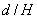

Manual del Vuelo a Vela
Wolf Hirth
1942
Vuelo con objetivo
por
WOLFGANG SPÄTE
Se
oye frecuentemente decir a las personas no muy enteradas del vuelo sin motor: « Concedo
que el vuelo a vela tiene gran valor educativo, pero carece de valor práctico. Un velero
puede estar en idas y venidas en la ascendencia de una ladera, pero si le pido que ponga
proa a un punto determinado, fracasa. En el mejor de los casos podrá alejarse del punto
de salida ciento o un par más de kilómetros aprovechando la térmica y el viento ; pero
dónde va a aterrizar, eso nunca lo sabe de antemano. » 
A
tal escéptico le puede hoy decir un piloto de velero experimentado : « Haga el favor,
señor ; indíqueme un punto - a 50, 100, 200 km. de distancia - e iré ahí volando a
vela en cuanto se presente la primera situación meteorológica apropiada. » Y
con un 90 % de seguridad puede afirmar que llegará al destino fijado, aun cuando durante
su vuelo haya viento de costado o hasta un viento en contra, si no es fuerte.
Claro
es que este empleo del vuelo a vela para alcanzar un objetivo determinado ha sido uno de
los temas que en los concursos del Rhön ha tenido siempre asignados los premios más
importantes. Al principio, cuando nada se sabía aún del vuelo térmico, se le pedía al
piloto, sencillamente, que fuese saltando desde la ascendencia de una ladera a la de otra,
por ejemplo, desde la Wasserkuppe hasta la Himmeldunkberg o la Heidelstein, o bien que
llegase al Milseburg. Después se estableció un premio para el que llegase a este
objetivo y volviese al punto de salida, y fue un verdadero acontecimiento cuando Nehring
dio la vuelta, por primera vez, al Milseburg, en 1926 y cuando Dittmar y Riedel, en día
de cielo azul, fueron hasta la Kissinger Hütte y volvieron a la Wasserkuppe. Hasta 1934
se esforzaron en vano los pilotos alemanes en ir desde la Wasserkuppe hasta el
Oechsenberg, a 35 km. de distancia y volver al punto de salida. Groenhoff, Kronfeld y
Hirth (Se
pone y y, no e porque el H inicial, en una palabra alemana, es aspirada y no
hay cacofonía. - N. del T.) fracasaron
muchas veces en este vuelo con objetivo y regreso. Finalmente en el 15. Concurso del
Rhön, en 1934, Hirth deshizo el anatema, haciendo el vuelo en su « Moazagotl »,
empleando cuatro horas y media; vuelo que fue repetido, dos días después, por Philipp y
que, en el año 1935, se volvió a hacer una docena de veces más, con lo que ya se
convirtió en una cosa natural.
En
el concurso del Rhön de 1935 se propusieron, por primera vez, temas de vuelo con
objetivo, determinando lugares de aterrizaje que distaban más de 100 km. de la
Wasserkuppe. Y, una vez que se vio que se habían hecho vuelos con objetivo reinando
viento lateral, de 200 km. y hasta de 300 km., en los concursos del Rhön de 1936 v 1937
se entró ya definitivamente en el uso del tema de esa clase de vuelo como cosa corriente.
Por
esta razón todos los pilotos de velero tienen que conocer los fundamentos del vuelo con
objetivo. Los dos medios para navegar son la brújula y la carta.
En
el vuelo con brújula en avión de motor, se puede calcular antes del vuelo cuál debe ser
el rumbo que ha de seguirse, es decir, la graduación que debe marcar la aguja en su limbo
teniendo en cuenta el error de compensación, la declinación y la deriva; todo ello
aplicado al camino más corto entre los puntos de partida y llegada que se han fijado.
Error
de compensación se llama al que resulta del efecto, sobre la brújula, de las partes
metálicas del aparato, error que tiene diferentes valores, según sean las diferentes
direcciones de vuelo. La declinación es el ángulo formado por la aguja magnética con la
dirección del Norte geográfico, ángulo que es debido a que no coinciden los polos
geográfico y magnético de la Tierra. En la Wasserkuppe la declinación vale -5º ; en
Colonia, -8º y en Könisberg, -1º (Se
advierte, además, que esta declinación varía de un año a otro; y aun es distinta en
días y hasta en horas diferentes por la variabilidad constante de las condiciones
magnéticas de la Tierra. Los datos de España en el año actual (julio 1942) son: en
Sevilla, 10º 50' ; en Madrid, 10º 20'; en Huesca 9º 5', y en Barcelona, 8º 9'. La variación anual en España es de unos 8
minutos de ángulo y es en sentido de disminuir la declinación acercándose la dirección
del Norte magnético, que es ahora occidental, a la del Norte geográfico. Este fenómeno
se llama variación secular, y su causa, en el estado actual de la ciencia, es
desconocida. -N. del T.).
La
declinación y el error de compensación no tienen gran importancia en el vuelo sin motor
; además, el último puede hacerse desaparecer casi mediante los órganos adecuados, de
que con tal finalidad van provistas todas las brújulas.
Resulta
así que lo único importante en el vuelo con objetivo es la consideración de la deriva
en el caso de viento de costado. El piloto de velero, en contraposición con lo que puede
hacer el piloto de avión ordinario, no puede calcular de antemano el rumbo que ha de
seguir en todo momento, puesto que ha de detenerse innumerables veces durante minutos para
virar en círculo en las ascendencias y con ello se separa constantemente de su ruta. Su
vuelo tiene que ser un continuo zigzag, cuyos ángulos serán tanto más agudos cuanto
más fuerte sea el viento lateral y cuanto mayor sea el ángulo entre la dirección del
viento y su rumbo, según el camino trazado en la carta, o sea la recta que une los puntos
de partida y llegada. En el caso de viento de popa, la brújula es el único medio
auxiliar de navegación necesario para tomar el rumbo en cuanto se ha ganado altura en la
ascendencia, siendo casi superfluo orientarse con la carta, la dirección del viento,
altura del sol, etc. En cambio, cuando hay
viento de costado es indispensable emplear también la carta. Entonces conviene fijarse en
unos cuantos puntos destacados que haya en la ruta, una vez trazada sobre la carta, y si,
mientras se gana altura, se sale uno de la ruta por la acción del viento, se tratará
luego de recuperarla llevando el vuelo durante la ejecución de los tramos rectos, de modo
que se pase sobre los puntos escogidos.
No
es posible llevar a cabo un vuelo con objetivo en caso de viento de costado, sin un
conocimiento exacto de la carta. El piloto de aviación de motor puede emplear lo que
puede llamarse « orientación próxima » u
orientación de detalle. Vuela a unos 500 m. sobre el terreno y se guía, desde un cruce
de caminos hasta otro, por detalles, tales como pequeñas puntas de bosque, edificios bien
destacados, aldeas, torres, fábricas, estaciones de ferrocarril, o por colinas, etc., de modo que lleva el vuelo exactamente en el rumbo
deseado (El
problema de que trata aquí el autor pertenece a la Navegación aeronáutica, que
constituye toda una de las ramas de la Aviación, dando lugar al título de Navegante
aéreo.).
El
piloto de velero usa solamente lo que podría llamarse « orientación general ». Cuando
sólo tiene 500 m. sobre el terreno, su atención no se dirige a otra cosa que a tratar de
encontrar, lo más inmediatamente posible, una ascendencia para alcanzar los 1000 m. o,
si puede ser, los 1500 o los 2000 metros.
En
esta altura el piloto solamente se puede orientar mediante elementos del terreno ya muy
destacados, como cordilleras, ríos, bosques, grandes lagos y ciudades, así como
también por las carreteras principales y las líneas férreas. A 15 000 m. de altura ya
no se puede distinguir si una línea férrea es de simple o de doble vía y cuál es el
pueblo sobre el que se está ; las elevaciones y montañas pequeñas no son visibles y se
desvanecen en el aspecto general del terreno. A esto se añade que el piloto no tiene
tiempo para practicar la « orientación de detalle ». Un minuto dedicado a buscar tal o
cual punto del terreno puede costarle un par de cientos de metros de altura, tan valiosa
para él. (El caso tratado es la aplicación continua de la inspección directa del terreno para conocer en
dónde se halla el piloto en cada momento, que es el primer problema parcial de la
navegación aeronáutica, llamado « ubicación ».
En
este sentido se indica que el terreno se ve, volando a la altura H, como
un
plano a la escala
el
terreno aparece como un plano, en escala de 1 : 25 000, visto a 20 cm. de distancia.
Un
efecto curioso de esta altura es el llamado de cazuela,
ilusión óptica que hace aparecer la tierra como cóncava, en lugar de convexa como
lo es en realidad, ilusión debida a que los sentidos refieren el horizonte a la altura
de la vista, mientras que a lo que se ve bajo los pies se le atribuye su verdadera
posición.
El
que esto escribe observó este efecto a los 4500 m. de altura que alcanzó en una de sus
ascensiones aerostáticas.
Otra
circunstancia sobre la que conviene llamar la atención es que la mayor o menor cantidad
de detalles que tenga el terreno hará más o menos difícil el problema y que muchas
veces, a cierta altura, el exceso de detalle, como ocurre en terrenos muy poblados y con
abundantes comunicaciones, puede ser motivo de dificultad. -N. del T.)
Un
piloto debe saber leer una carta perfectamente. Lo mejor es emplear la carta topográfica
en escala de 1 : 300 000, llamada carta de aviación (En
España existe la carta de 1: 200 000 llamada Mapa Militar Itinerario de E. M., usada
por el que esto escribe en las ascensiones aerostáticas, y se publica una nueva edición
con curvas de nivel. Para aviación se ha publicado un Mapa con bosques y otros detalles
adecuados, en escala de 1 : 1000 000. -N. del T.). En
los márgenes hay explicaciones de los signos convencionales que el piloto debe saber de
memoria. Debe estar en condiciones de, al mirar una carta, formarse idea clara de la
configuración del terreno y no solamente distinguir entre bosques y prados, sino también
reconocer los valles que surquen el terreno y las divisorias que existan en él ; los
bajíos pantanosos, las mesetas y todos los demás elementos de que se componga el
terreno; y como durante el vuelo no le quedará tiempo para hacer comparaciones entre la
carta y la realidad, lo que debe hacer es estudiarse bien el mapa antes de emprender el
vuelo para grabársele bien en la imaginación, y así podrá luego prescindir de la
carta mientras lo está ejecutando. Especialmente deberá estudiar la zona en la que se
encuentre el objetivo fijado, en un amplio radio alrededor de él, con lo cual podrá
orientarse en seguida aun cuando llegue a esa zona distando aún 20 ó 30 km. del lugar
donde debe aterrizar.
Antes
del vuelo deberá plegar la carta de modo que luego sea fácil ir pasando, por simple
vuelta de hoja, de unas zonas a otras, a medida que se va desarrollando el vuelo, y así
se ahorra tiempo de extender y doblar el mapa cuando se va haciendo el vuelo, lo cual es
incómodo dado el pequeño espacio de que dispone el piloto en su asiento. Se deberá
trazar con lápiz, sobre la carta, la recta que une los puntos de salida y aterrizaje, y
así cuando se hace el vuelo, aunque no sea posible seguir exactamente la línea trazada,
se tienen puntos de referencia sobre los que guiarse en los tramos rectos. No es
recomendable llevar las cartas arrolladas aun siendo en portacartas a propósito para ello
(Se refiere el autor a los portacartas formados por dos tambores en los que la
carta
usada se va arrollando en uno mientras se desenrolla del otro, dejando entre ambos un
espacio en el que se encuentra la zona de carta que sea necesaria en cada momento. -N.
del T.). En un solo concurso es necesario
adquirir, por lo menos, dos docenas de cartas de itinerarios de vuelo de diferentes
direcciones y esto resulta algo excesivo para el bolsillo. Lo mejor es prepararse una
carta grande que comprenda una zona de unos 200 km. de radio alrededor del punto de
salida.
En
los vuelos con objetivo no es de aconsejar hacer vuelos dentro de nubes, a menos que se
trate de piloto con mucha práctica, porque al salir de la nube ocurre muchas veces que se
encuentra uno con un terreno completamente desconocido Y es preciso entonces emplear mucho
tiempo para orientarse y reanudar el vuelo en la dirección debida.
Para
comprobar durante el vuelo si la dirección del viento es la misma que al empezarle o ha
cambiado, con lo que habría que acomodar la conducta en el vuelo a las nuevas
circunstancias, se podrá emplear el recurso de observar las sombras de las nubes. Habrá
de tenerse en cuenta que el viento en el suelo tiene una dirección que se separa muchas
veces de la del viento en altura en un 30 % (Este efecto es debido al rozamiento del aire
con el suelo, del que resulta que así como en una altura de unos 500 m. el viento es
paralelo a la isobara o linea de igual presión, en el suelo forma un ángulo con ella de
unos 40º, siendo diferente este ángulo según la naturaleza del terreno.
Ese
ángulo se llama de deflexión del viento y su existencia
da lugar a que al subir 500 m. haya que contar con una rotación del viento, a la derecha,
suponiendo la espalda al viento, de unos 40º a 50º. Cuando el viento es fuerte, esta
rotación es menor. -N. del T.).
Cuando
un piloto vaya a emprender un vuelo con objetivo y no tenga práctica de volar con la
guía de una carta, deberá hacer antes algunos vuelos de entrenamiento para acostumbrarse
a apreciar, en la realidad, los detalles de la carta y sobre todo las distancias, haciendo
pruebas a diferentes alturas. Con esto adquirirá cierto instinto que le permitirá
estimar el tiempo que tardará en el vuelo para recorrer una distancia de la carta, por
ejemplo, de 5 cm., y así puede dejar pasar un cuarto de hora, media hora o una hora
entera sin tener que volver a mirar la carta.
Hakenjos
y Späte hacen las reflexiones que siguen a continuación, deducidas de sus vuelos con
objetivo en el 17 concurso del Rhön, las cuales naturalmente pueden servir de modelo en
circunstancias parecidas a las señaladas por estos pilotos.
El
relato de Hakenjos dice :
«
Mis vuelos con objetivo me demostraron claramente la necesidad de una carta bien
preparada. Pude, comprobar también el error en que estaba de que no era posible valerse
de cartas para la orientación cuando se vuela en velero, porque, en la mayor parte de
los tipos de estos aparatos, no disponía el piloto de espacio suficiente para ello, y vi
ya, desde los primeros ensayos, que plegando la carta convenientemente se la puede
manejar sin el más pequeño inconveniente. Si resulta caro adquirir cartas de
itinerarios no hay dificultad en emplear una carta general plegada, teniendo únicamente
la precaución de que no sea una carta demasiado grande que luego cueste trabajo ir
pasando los dobleces. Me permito aconsejar lo siguiente, deducido de mi propia experiencia
: proveerse de cuatro cartas que se acoplen pero que se conserven separadas, en escala de
1 : 300 000, todas saliendo de la Wasserkuppe y de las direcciones NE, SE, SW y NW (Se
recuerda que, según convenios internacionales, el Oeste se representa
Sobre
la ejecución del vuelo propiamente dicha cuenta Späte lo que sigue :
«
Solamente con la observación atenta de la carta se cae en la cuenta de muchas cosas ; si
se estudia la comarca, a lo largo de un itinerario, se puede ver, verbigracia, que pasa
por extensas regiones pantanosas o pobladas de bosques, es decir, sobre clases de
terreno que yo trataría de evitar si hubiese de hacer un vuelo libre en día sin nubes.
Entonces se encuentra uno ante este dilema : acepto el apartarme del rumbo del camino
más corto para tener mejores perspectivas de térmica con el riesgo de tener que
aterrizar sin haber conseguido el objetivo, o bien sigo exactamente el itinerario, aunque
mi experiencia sobre el vuelo a vela me dice que en él encontraré desfavorables
condiciones térmicas. Personalmente me decido siempre por la segunda solución, aunque
otros concursantes prefieren hacer el rodeo para evitar los lugares « flojos » en
ascendencias.
«
Tratándose de un vuelo con objetivo, se dirá que se ha logrado « engancharse » a una
ascendencia que tenga traslación, aunque sea ésta en el rumbo del itinerario escogido,
no en el sentido de orientarse ya en ella, sino tomándola solamente, como uno de tantos
apoyos cuando se vuela con rumbo determinado, como podría utilizarse igualmente una
comarca que ofreciese muchas ascendencias o cúmulos de buenas condiciones que tal vez
es lo mejor. Por consiguiente, si me llega el caso, daré un rodeo evitando las comarcas
pantanosas ; trataré de permanecer lo más posible sobre terreno de caracteres no
uniformes ; evitaré volar a lo largo de los valles con río, puesto que en ellos puedo
tener descendencias de kilómetros de longitud y procuraré siempre tener buena altura.
Recomiendo que en los primeros 50 km. no se pase por ninguna ascendencia, por débil que
sea, sin utilizarla, en la esperanza de que más tarde se encontrará una « chimenea »
de mejores condiciones. Una vez había llegado yo tan cerca del suelo que, el, ocasiones,
sólo tenía 20 m. de altura, y, sin embargo, seguí volando en la dirección del rumbo
conveniente ; en estos casos se presenta la cuestión de encontrar un sitio a propósito
para aterrizar y naturalmente que sólo se puede apurar tanto el vuelo cuando se tenga
seguridad en hacer aterrizajes. Por lo tanto, se ve la conveniencia de que entre los
trabajos que deben hacer los pilotos que vayan a tomar parte en un concurso debe figurar
el dedicarse incansablemente a hacer vuelos fijando de antemano el lugar en que se ha de
aterrizar, pues con los aparatos que se usan hoy, provistos de alerones de aterrizaje, no
es cosa de magia hacer el aterrizaje en cualquier sitio. En un vuelo con objetivo no hay
inconveniente en entrar dentro de una nube y en ella virar en círculo para ganar altura ;
lo que no debe hacerse es, cuando se ha perdido la ascendencia, abandonarse tiempo y
tiempo a volar dentro de la nube sin un plan determinado. Lo que yo hacía era que, una
vez que había estado en la nube diez o quince minutos con vuelo sin visibilidad, salía
de ella, aprovechando el momento en que la brújula tenía el rumbo debido y así
rápidamente recuperaba la orientación en cuanto volvía a ver el terreno. »
Como
final de este capítulo del « vuelo con objetivo », Ludwig Rotter nos refiere su vuelo
de Berlín a Kiel, llevado a cabo en el concurso olímpico.